같은 128GB인데 가격이 뒤집혔어요
영상은 가격 비교 한 장으로 시작해요. 왼쪽 카드가 DGX Spark 128GB, 오른쪽이 맥 스튜디오 M5 Max 128GB예요. 카드 아래 숫자를 보면 DGX Spark는 11,615,970원, 맥은 8,710,000원이에요. 같은 128GB인데 엔비디아 쪽이 더 비싸요.
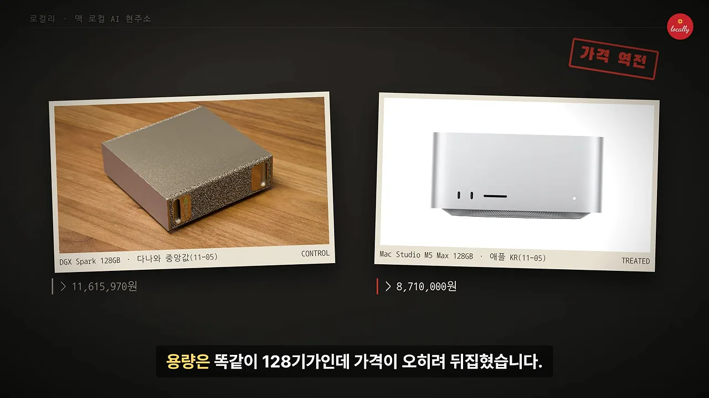
그렇다고 맥이 정답이라는 이야기는 아니에요. 영상의 답은 '용도에 따라 다르다'이고, 이를 칩 성능, 대역폭, 실제 모델 속도로 하나씩 따져 가요.
맥 로컬 AI는 언제부터 쓸 만해졌나요
타임라인 슬라이드는 세 줄이에요. 2020년 M1이 통합 메모리를 들고 나오면서 CPU(Central Processing Unit)와 GPU가 같은 메모리를 쓰기 시작했어요. 2023년에는 llama.cpp와 애플의 MLX가 잇따라 공개됐고, 2026년 가을 Ollama 0.40부터는 지원하는 모델을 MLX로 기본 실행해요.
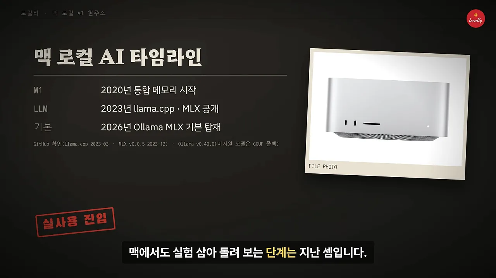
그래서 이 영상은 복잡한 스펙 대신 세 가지만 봐요. M1~M5 칩의 체급과 AI 연산, 메모리 대역폭, 그리고 2026년 신형 모델이 실제로 얼마나 빨리 돌아가는지예요. 내 작업에 맞는지는 이 세 기준에서 정해진다는 게 영상의 관점이에요.
칩 체급, 대역폭, 용량
일반 연산으로 보면 M5 Ultra는 RTX 3090급이에요
첫 차트는 FP32 그래픽 연산 성능이에요. 빨간 막대 두 개를 보면 돼요. 맨 위 RTX 5090이 104.8 TFLOPS(Tera Floating-point Operations Per Second)이고, 네 번째 줄 M5 Ultra가 33.2 TFLOPS예요. RTX 3090(35.6)과 비슷하고, 4090(82.6)이나 5090에는 한참 못 미쳐요.
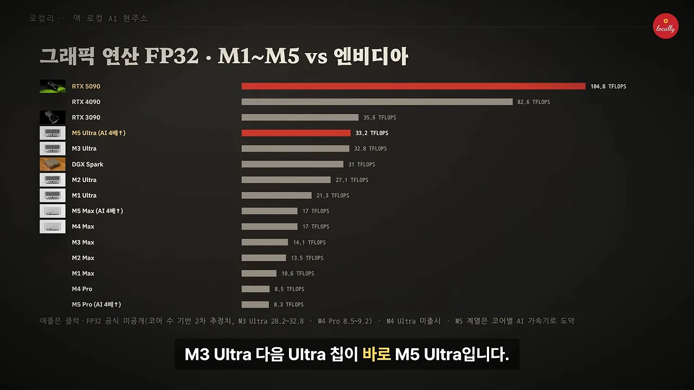
M4 Ultra는 나오지 않았어요. 그래서 M3 Ultra 다음 Ultra 칩이 바로 M5 Ultra예요.
M4와 M5는 같은 17T인데 무엇이 달라졌나요
숫자 세 개로 정리한 슬라이드예요. 왼쪽은 일반 FP32가 17T에서 17T로 그대로라는 뜻이에요. 가운데는 AI 연산·프롬프트 처리가 M4 대비 4배, 오른쪽은 M5 Ultra의 이미지 생성이 4.3배 빨라졌다는 숫자예요. 가운데 숫자 아래 'GPU 코어 Neural Accelerator'가 그 이유예요.
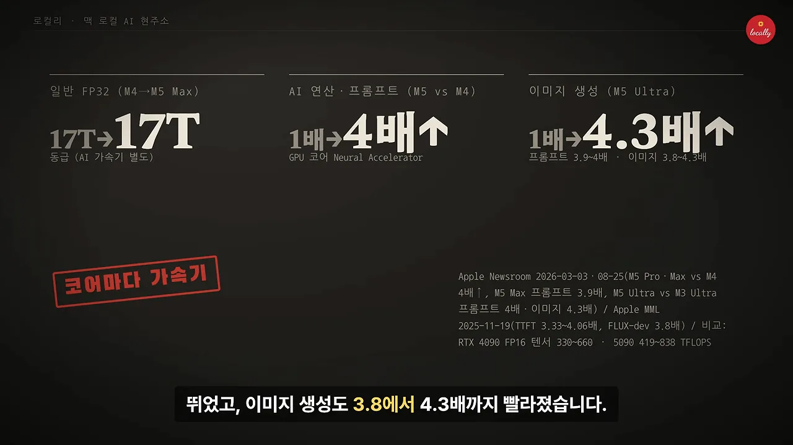
영상은 엔비디아가 전용 텐서 코어를 따로 갖고 있어 절대 체급은 여전히 앞선다고 인정해요. 그래도 지금 AI용 맥을 새로 산다면 좀 비싸더라도 M5 세대를 사라고 권해요.
글자 뽑는 속도는 메모리 대역폭이 정해요
대역폭 차트에서는 두 번째 줄을 보세요. M5 Ultra가 1,228GB/s로 RTX 4090(1,008GB/s)보다 넓어요. M1~M3 Max는 410GB/s, Ultra는 819GB/s였고, M5 Max는 614GB/s까지 올라왔어요. 맨 아래 DGX Spark는 273GB/s로 M4 Pro와 같은 수준이에요.
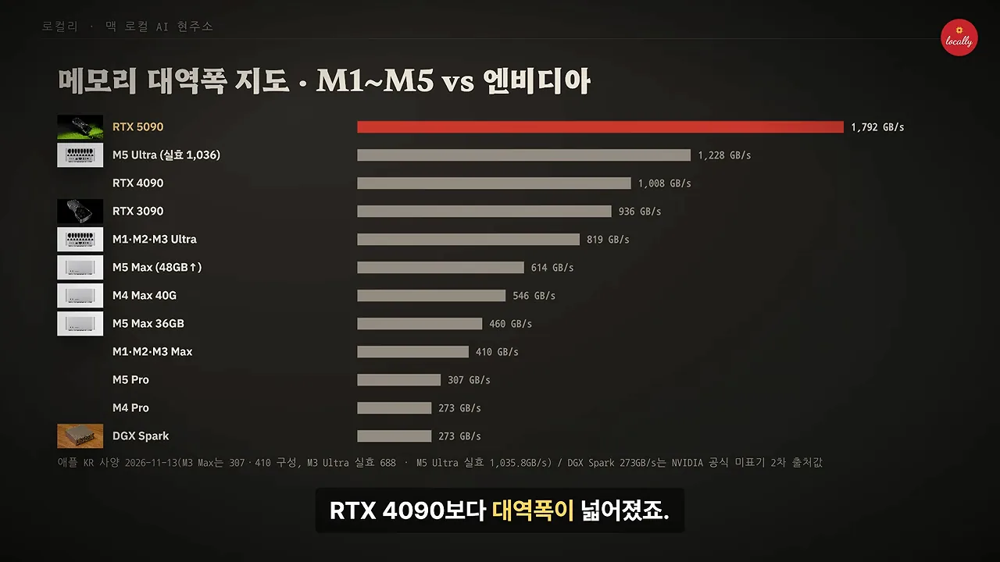
여기서 영상이 짚는 함정이 있어요. M5에서 96GB는 Ultra 칩이라 대역폭이 1.2TB/s인데, 128GB는 Max 칩이라 614GB/s로 내려와요. 용량이 더 큰 쪽이 오히려 느릴 수 있다는 뜻이에요.
메모리 용량별로 어떤 모델이 들어가나요
4bit 양자화 기준으로 용량과 모델 크기를 맞춘 표예요. 초록 O는 편하게 돌아감, 노란 △는 아슬아슬, 회색 X는 안 들어감이에요. 36GB는 27B급까지, 64GB는 125B MoE가 아슬아슬하고, 96GB와 128GB부터 125B MoE가 편해요. 320B 모델을 통째로 올리려면 256GB가 필요해요.
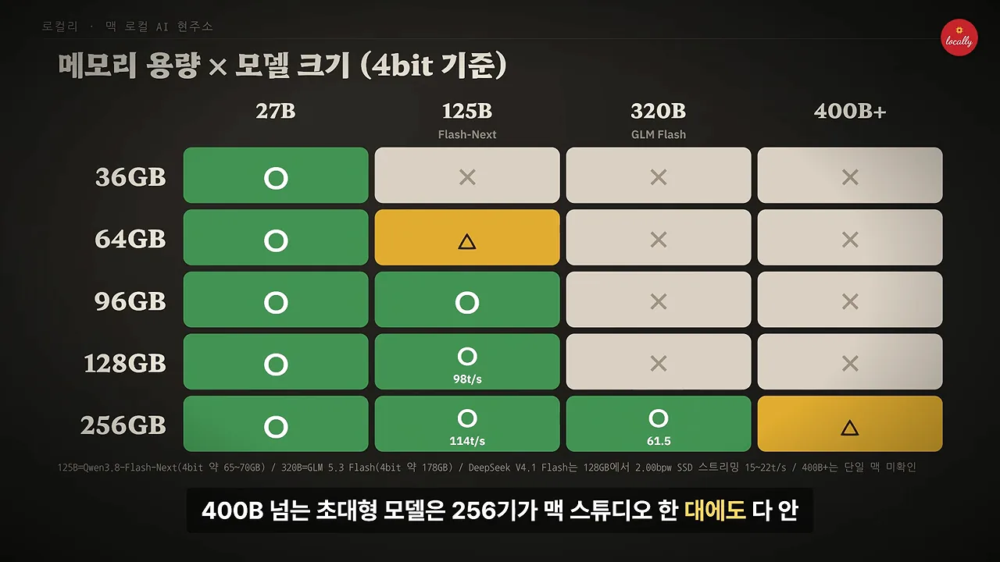
MLX 생태계와 신형 모델 실측
MLX는 이제 앱이 알아서 붙여 줘요
예전에는 MLX를 개발자가 따로 깔아야 하는 느낌이었어요. 지금은 Ollama나 LM Studio 같은 앱이 알아서 MLX를 붙여요. 코딩 에이전트 연결부터 이미지·음성까지 웬만한 도구는 맥에서 돌아가요.
하지만 표의 두 열을 비교해 보면 이야기가 달라져요. 왼쪽 'MLX 지원'은 영상만 빼고 모두 O예요. 오른쪽 '실사용'에서 O는 언어 모델(쾌적) 하나뿐이에요. 코딩 연결은 대기 발생, 이미지는 속도 느림으로 △이고, 영상은 품질·속도 모두 X예요.
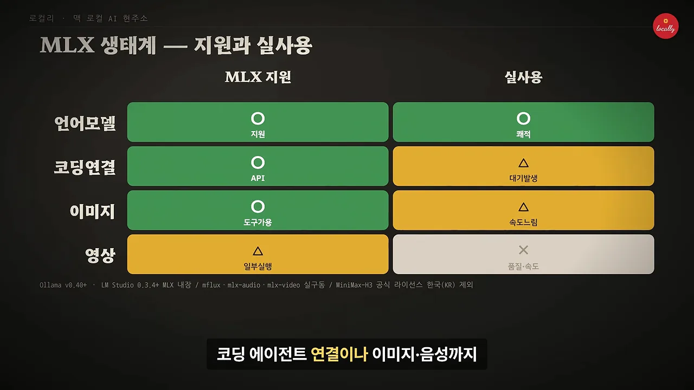
작은 덴스 모델은 RTX 5090이 앞서요
첫 비교는 덴스 모델 Qwen3.8 27B예요. 32GB 그래픽 카드 한 장에 쏙 들어가는 크기라, 모델이 카드 안에 다 들어가면 대역폭이 넓은 쪽이 이겨요. 카드 아래 숫자를 보면 오른쪽 RTX 5090(대역폭 1,792GB/s)이 oMLX 기준 초당 59토큰, 왼쪽 M5 Ultra 256GB가 48토큰이에요.
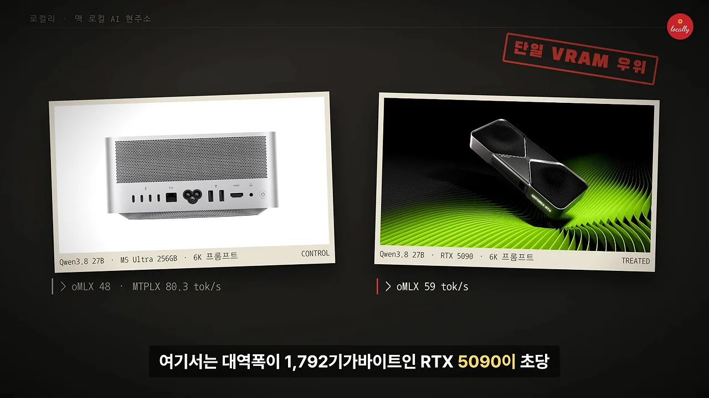
125B MoE에서는 맥이 엔비디아 카드와 나란히 서요
다음은 전체 125B, 실제로 계산에 쓰는 파라미터는 6B인 Qwen3.8-Flash-Next예요. 빨간 막대 두 개가 1, 2등이에요. RTX 5090이 164.3토큰, M5 Ultra가 114토큰이에요. 그 아래 M5 Max 128GB(98.2), RTX 3090(97.2), RTX 4090(96.6)이 거의 같은 길이예요.
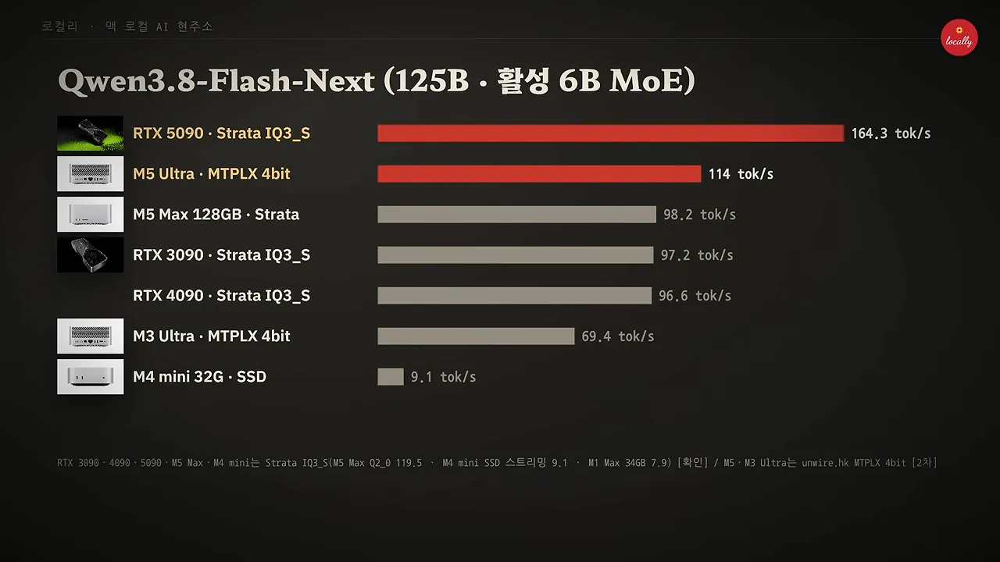
마지막 줄이 가능한 이유는 Strata라는 엔진 덕분이에요. 영상에 따르면 Strata가 이제 M1 이상 애플 실리콘의 Metal을 정식 지원해서, 32GB M4 mini에서도 SSD 스트리밍으로 초당 9토큰까지 나와요.
300B를 넘으면 대용량 통합 메모리가 값을 해요
'대용량 램 구간' 카드 두 장이에요. 왼쪽은 320B급(활성 18B) GLM(General Language Model) 5.3 Flash를 256GB M5 Ultra에서 돌린 결과예요. 일반 24~32GB 그래픽 카드 한 장엔 들어가지도 않는 모델이 61.5토큰, DFlash를 켜면 76.9토큰이에요. 오른쪽은 DeepSeek V4.1 Flash로, M5 Max 128GB에서 Strata로 15~22토큰이 나와요.
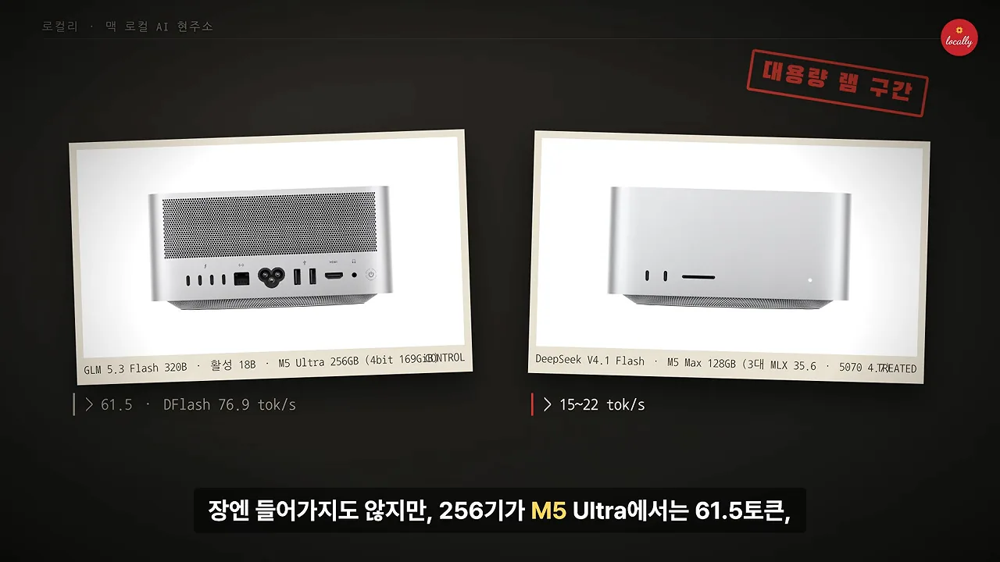
맥 여러 대를 묶는 길
macOS 26.2부터 지연 시간을 크게 줄인 RDMA(Remote Direct Memory Access) 방식이 들어갔어요. 맥 스튜디오 여러 대를 Thunderbolt 5 케이블로 묶고 MLX나 exo로 돌리면, 512GB 한 대에도 안 들어가는 800B대 모델이 초당 36토큰대로 돌아가요. 왼쪽 카드의 'M5 Ultra 4대 (816B · NVFP4)'와 '4대 36.7 tok/s'가 그 숫자예요.
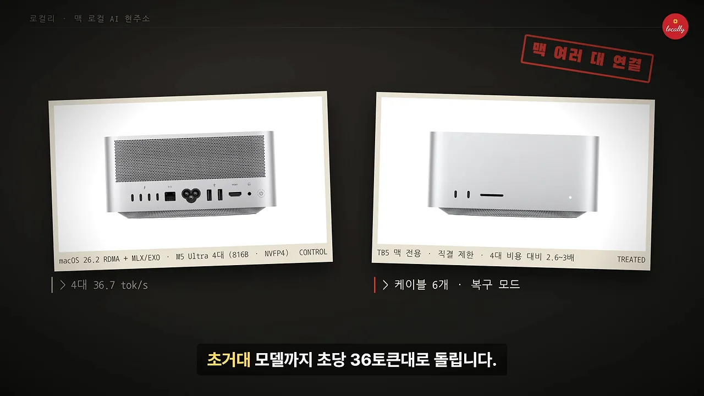
영상은 이 방식의 한계를 세 가지로 정리해요. Thunderbolt 5가 있는 최신 맥만 되고, 스위치 없이 케이블로 직접 맞물려야 해서 4대를 넘기기 어려워요. 그리고 4대 값을 들여도 속도는 2.6~3배이고 설정에도 손이 가요. 그래서 여러 명이 쓰는 서버보다는 혼자 초거대 모델을 올리는 용도에 가깝다고 봐요. 애플이 터미널 명령 없이 맥 여러 대를 묶는 Harbor라는 앱을 테스트 중이라는 루머도 소개해요.
'스위치 없이 직접 맞물린다'를 그림으로 옮기면 이래요. 맥 네 대가 서로 한 번씩 케이블로 이어져야 하니, 화면에 적힌 대로 케이블이 6개 필요해요.
국내 가격과 가성비
국내 실구매가
2026년 11월 기준 경쟁 장비 다섯 대의 국내 가격이에요. 사진 아래 작은 글씨가 가격이에요. 가장 싼 건 AMD(Advanced Micro Devices) Strix Halo 128GB 미니 PC(Personal Computer)로 599만 원부터 시작하고, DGX Spark 128GB는 중앙값 1,162만 원으로 1,000만 원이 넘어요.
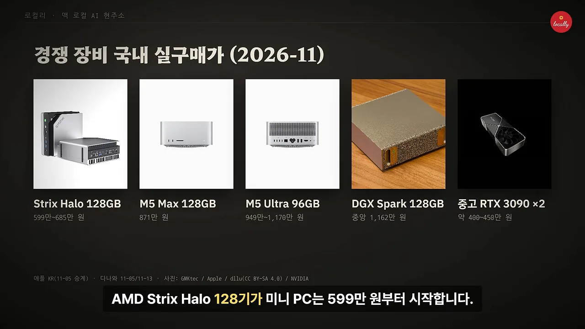
| 장비 | 국내 가격 | 대역폭 |
|---|---|---|
| Strix Halo 128GB 미니 PC | 599만~685만 원 | — |
| M5 Max 128GB | 871만 원 | 614GB/s |
| M5 Ultra 96GB | 949만~1,170만 원 | 1,228GB/s |
| DGX Spark 128GB | 중앙값 1,162만 원 | 273GB/s |
| 중고 RTX 3090 2장 | 약 400만~450만 원 | 936GB/s (1장) |
기준을 바꾸면 가성비 순위가 바뀌어요
영상은 가성비를 두 가지로 나눠 봐요. 램 용량을 싸게 담는 데는 Strix Halo와 128GB 맥이 좋아요. 속도 가성비는 '대역폭 1GB/s당 가격'으로 따지는데, 이 차트에서는 막대가 짧을수록 유리해요. 중고 RTX 3090(카드 한 장 값 기준)이 1,602원으로 압도적이고, M5 Ultra 96GB가 7,728원으로 뒤를 이어요.
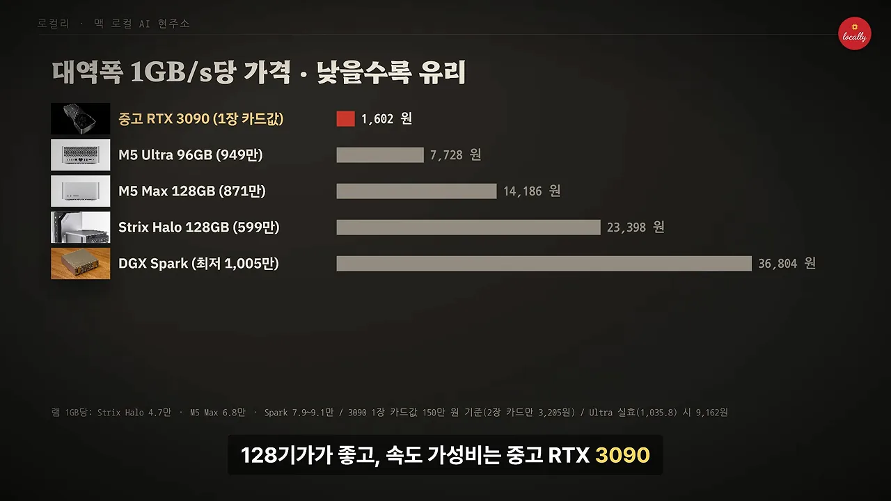
중고로 살까, 신품으로 살까
국내 중고 시세 슬라이드는 세 줄이에요. M5 세대는 미개봉 호가가 신품의 94~100%라 신품을 사는 게 나아요. 반면 단종된 M3 Ultra 512GB 중고는 2,400만~2,800만 원이라, 신품 M5 Ultra 512GB의 3분의 2 가격에 초대용량을 구할 수 있어요.
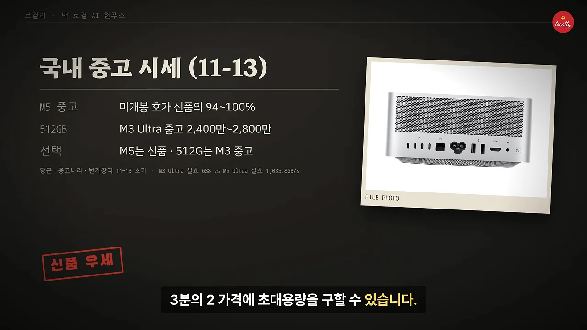
RTX 3090을 여러 장 꽂으면 빨라질까요
영상은 3090을 여러 장 꽂는다고 글자 나오는 속도가 카드 수만큼 늘지는 않는다고 짚어요. 모델을 층별로 나눠 담으면 카드가 차례로 일하니 한 장일 때와 속도가 비슷해요. 텐서 병렬을 써야 프롬프트 읽기가 빨라져요. 이 장면의 화면은 그림만 있어서 두 방식을 그림으로 옮겼어요.
CUDA의 벽, 그리고 용도별 선택
스펙보다 큰 원인은 생태계예요
맥으로 하기 어려운 일의 가장 큰 원인은 스펙이 아니라 CUDA 중심 생태계라는 게 영상의 진단이에요. 왼쪽 숫자는 DGX Spark가 CUDA 최적화 전후로 45.9에서 60.6 tok/s로 빨라졌다는 뜻이에요. 대역폭이 맥의 절반 아래인데도 소프트웨어 업데이트만으로 하루가 다르게 빨라진다는 예시예요.
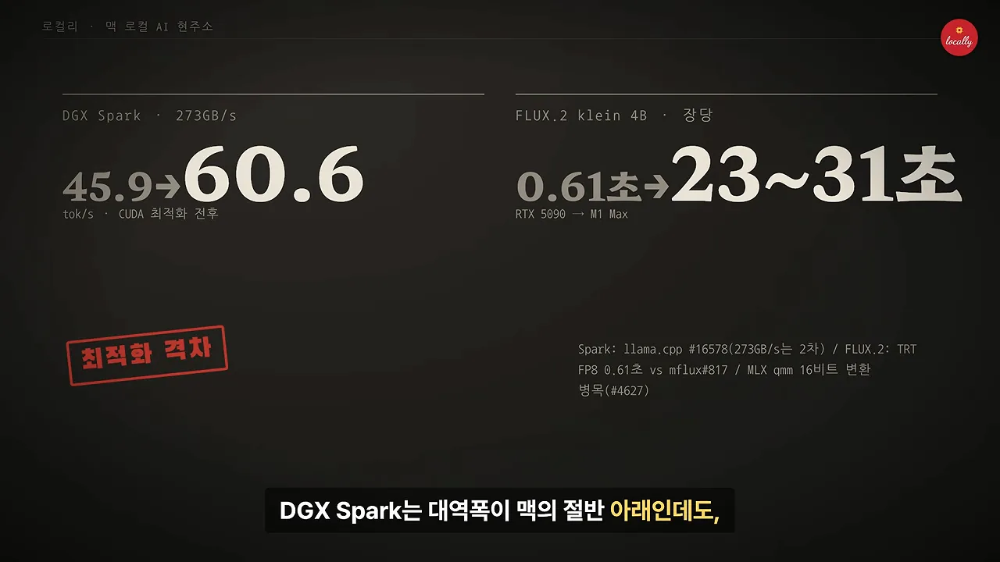
맥은 새 기술이 나와도 MLX에 들어올 때까지 기다려야 해요. 양자화 모델도 내부에서 16비트로 다시 풀어 계산하는 구간이 있어서 속도가 더디게 좋아진다고 해요. 슬라이드 각주의 'MLX qmm 16비트 변환 병목'이 이 이야기예요.
이미지·영상 생성은 격차가 수십 배예요
영상 생성 시간 차트는 막대가 짧을수록 빨라요. 맨 위 빨간 막대가 5090의 LTX-2.5 5초 영상으로 28.7초예요. 같은 LTX-2.5를 M4 Max는 해상도를 면적 44%로 줄이고도 118.1초 걸렸어요. 맨 아래 M4 Pro의 MiniMax Turbo(3초 영상)는 693초, 11.5분이에요.
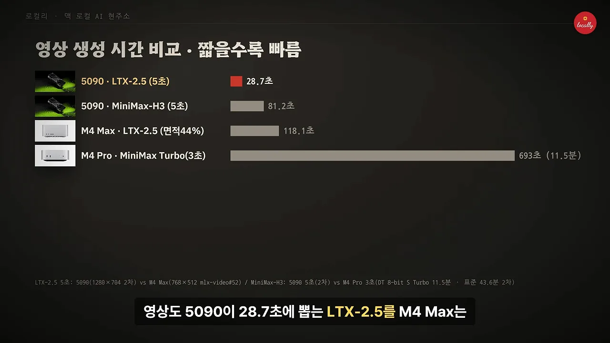
더 큰 문제는 결과물이 깨진다는 거예요
속도보다 심각한 건 결과물이 망가지는 경우가 적지 않다는 점이에요. 맥용 실행 환경이 아직 덜 다듬어져 있어서예요. 화면의 세 사례가 실제 GitHub 이슈에 올라온 것들이에요. 왼쪽은 M3 Ultra에서 모자이크처럼 깨진 화면, 가운데는 M5 Pro에서 벌새 그림이 초록 블록으로 뭉개진 화면, 오른쪽은 M1 Ultra에서 화면 전체가 초록색으로 나온 경우예요.
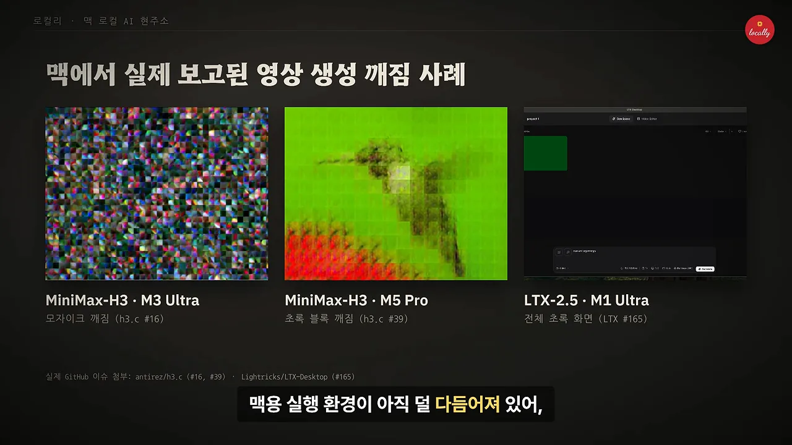
속도를 맞추려고 화질을 낮추면 또 다른 문제가 생겨요. 움직임이 큰 장면에서 얼굴이나 물리 법칙이 쉽게 뭉개져요.
코딩 에이전트와 서버 용도도 아쉬워요
긴 코드를 매번 새로 읽어야 하는 코딩 에이전트에서는 한참 기다려야 해요. 여러 요청을 한꺼번에 처리하는 힘도 CUDA 장비보다 약해요. 512GB 모델은 3,805만 원이고, 저장 장치까지 늘리면 5천만 원에 가까워요. 게다가 macOS가 메모리 일부를 쓰기 때문에 표시된 용량을 전부 AI에 쓸 수도 없어요.
그래서 무엇을 사야 할까요
영상은 마지막에 용도별 선택표를 보여 줘요. 맨 윗줄 1인 LLM(Large Language Model)은 맥 두 종류와 Strix Halo가 모두 O예요. 가성비는 Strix Halo가 최저가로 O, 70B급 대형 모델은 M5 Ultra와 CUDA가 O예요. 맨 아랫줄 영상·서버는 CUDA만 O예요.
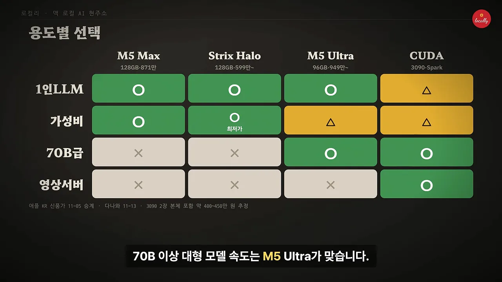
정리하면 검증된 대형 MoE 모델을 조용히 혼자 돌리는 용도라면, 이제 비싸더라도 M5 세대가 충분히 값을 해요. 이미지·영상 생성이나 깨짐 없는 최신 도구가 목적이라면 여전히 CUDA 진영으로 가야 해요. 영상은 결국 맥이 만능이 된 건 아니라고 맺어요.
결국 맥이 만능이 된 건 아닙니다.
— 영상 08:58